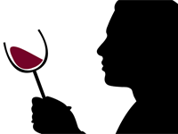
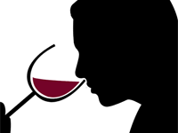
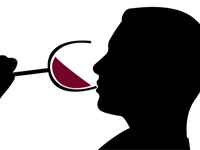

cata de vinos
¿qué es catar?
Catar es una palabra familiar para todos los amantes del vino, que significa ni más ni menos que experimentar con todos los sentidos un vino; intentar comprenderlo, conocerlo, descubrirlo, buscar defectos y virtudes, para luego expresar en palabras todo lo que se percibió a través de la vista, el olfato y el gusto. Para apreciar las cualidades que puede ofrecer un vino no es necesario ser un especialista. Siguiendo algunas pautas básicas, basta con animarse a encontrar los secretos que encierra una copa para disfrutar y conocer mucho más sobre la bebida que contiene.

fase visual
Se evalúan los colores (intensidad y matiz) y la transparencia. Se analizan matices, lágrimas, limpidez, fluidez, efervescencia. Se atiende especialmente a la apariencia del vino.

fase olfativa
Se inhala profundamente, primero sin mover la copa, luego, girándola para que se volatilicen los aromas más complejos. Se analizan persistencia e intensidad de los aromas. Se identifican los descriptores. Nariz / tacto: Percibimos la causticidad (provocada por el alcohol, sensación quemante o ardor en las paredes de la nariz) y la temperatura.

fase gustativa
Se toma un sorbo y mientras el vino permanece en la boca, se absorbe aire y se lo hace burbujear. Se evalúa el ataque (gustos dulces), la acidez, el equilibrio, la intensidad de boca y la concentración de aromas y sabores. Se detectan los descriptores y se analiza la textura (untuosidad, astringencia, causticidad) del vino. Se percibe la persistencia y se determina la tipicidad y complejidad.